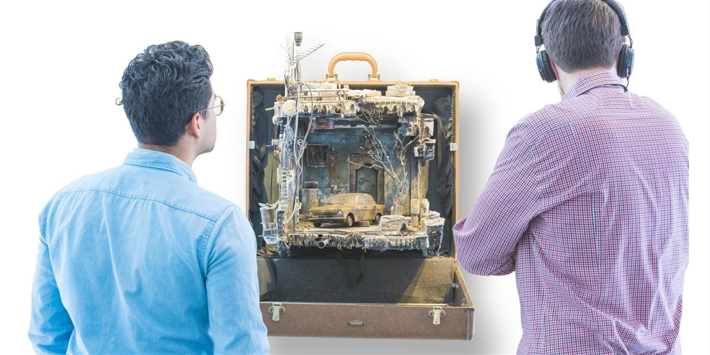
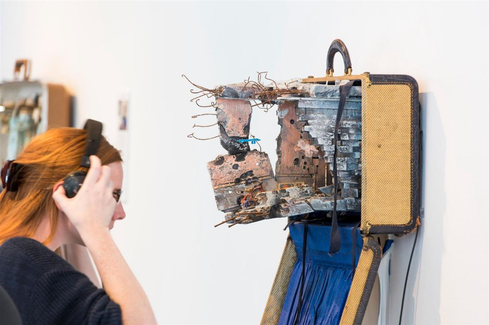
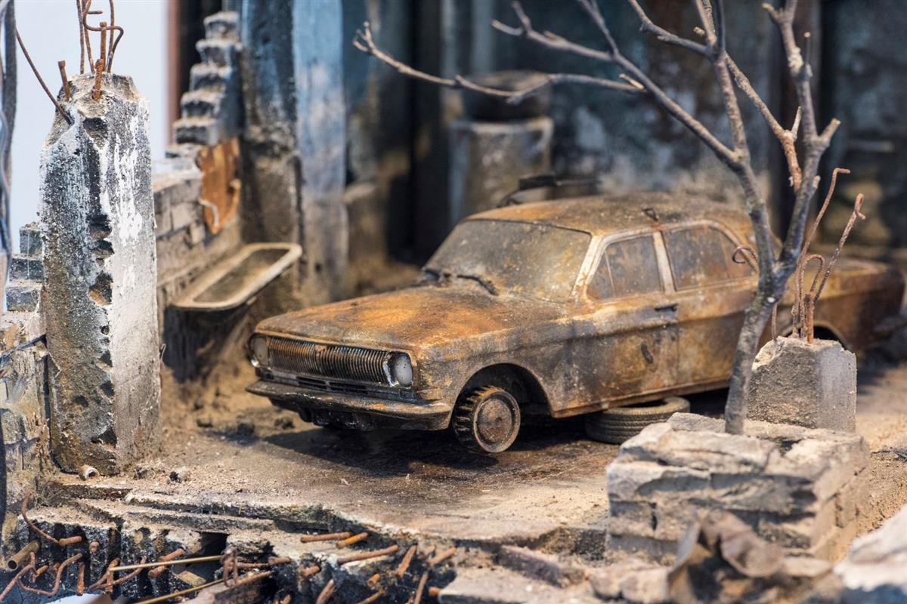
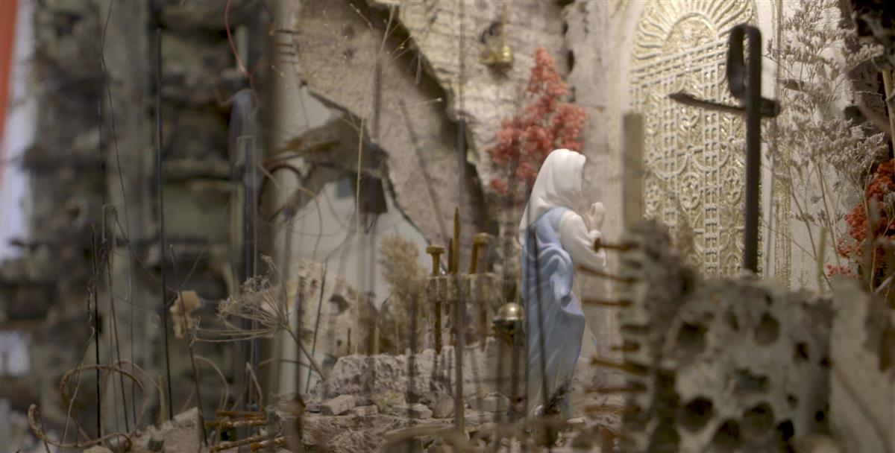
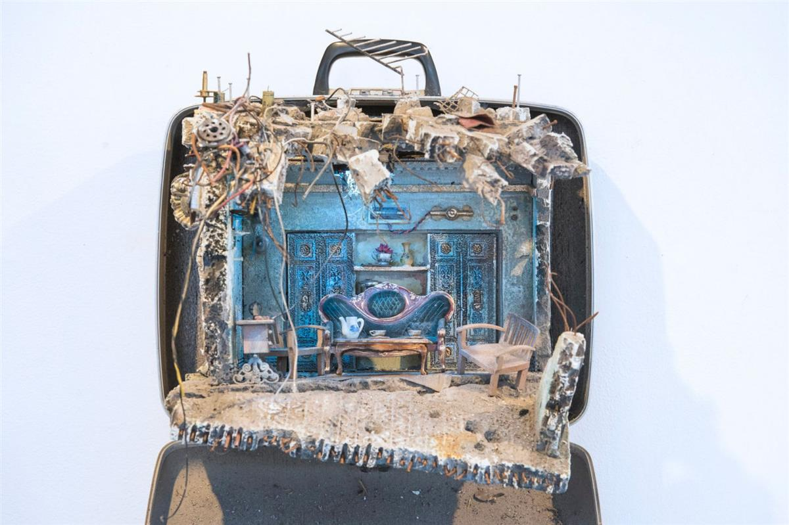
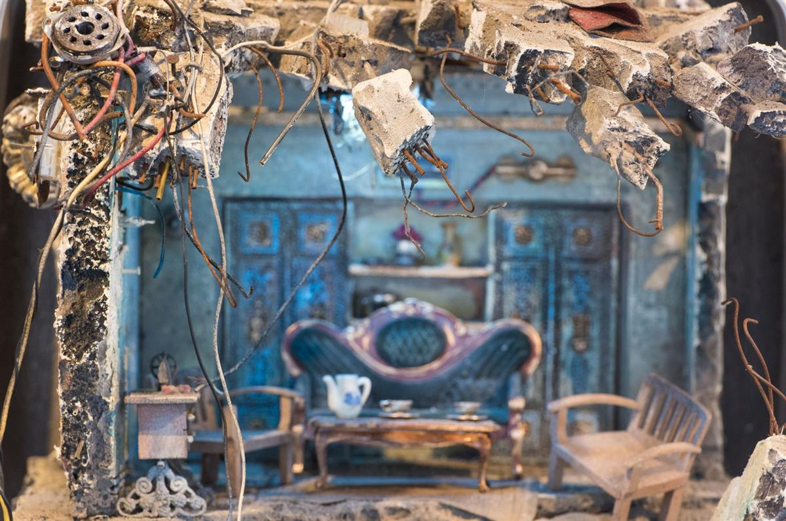
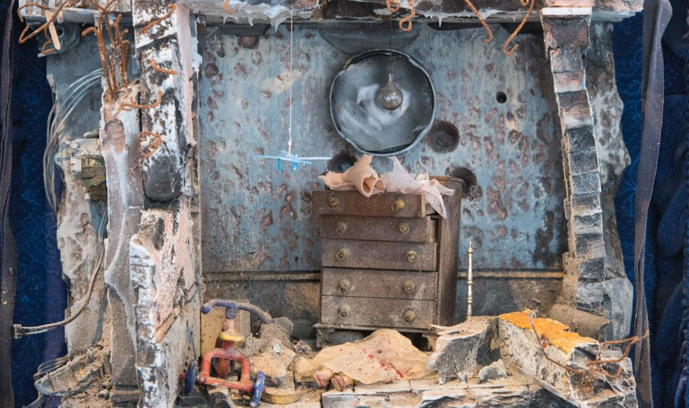
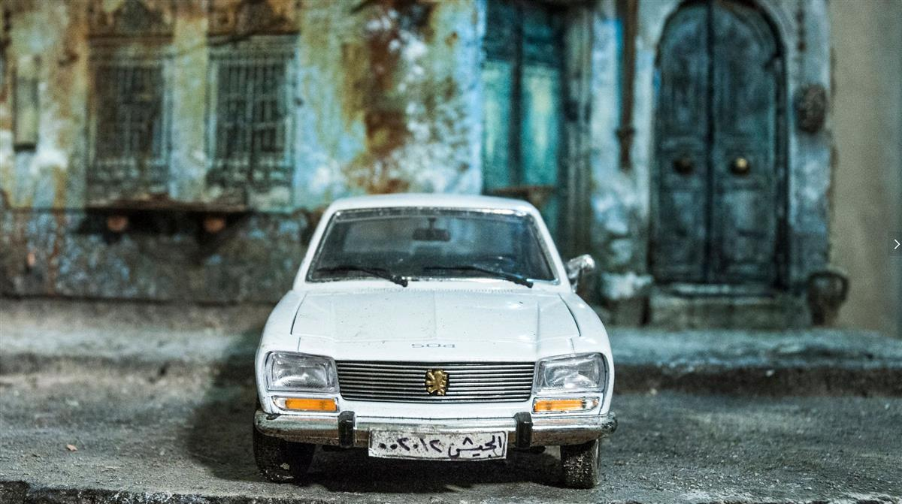
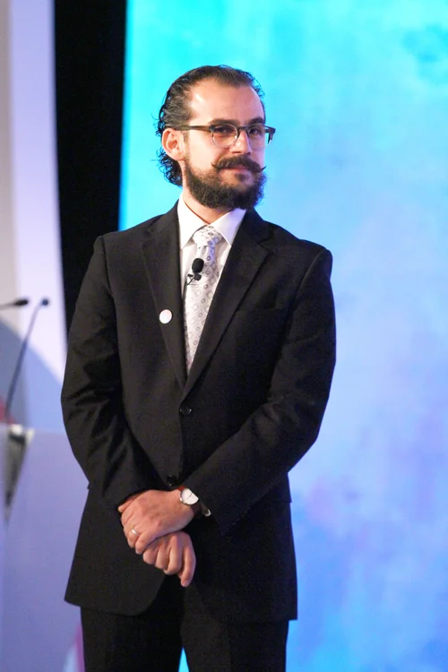
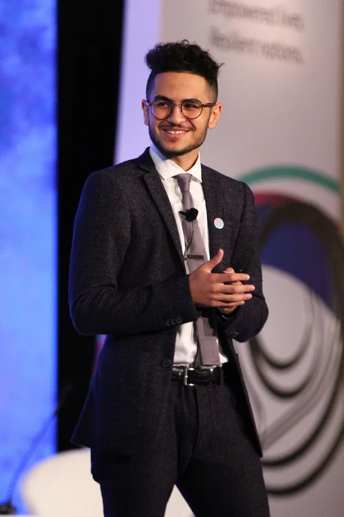

“Your house is your larger body.
It grows in the sun and sleeps in the stillness of the night;
and it is not dreamless. Does not your house dream?
and dreaming, leave the city for grove or hill-top?
— Khalil Gibran, 'On Houses'
Open on original site ↗UNPACKED: Refugee Baggage seeks to humanize the word “refugee.” Created during the summer of 2017, this multi-media installation is the work of Syrian-born, New Haven CT artist and architect Mohamad Hafez and Iraqi-born writer and speaker Ahmed Badr.
For UNPACKED: Refugee Baggage Hafez sculpturally re-creates rooms, homes, buildings and landscapes that have suffered the ravages of war. Each is embedded with the voices and stories of real people — from Afghanistan, Congo, Syria, Iraq and Sudan — who have escaped those same rooms and buildings to build a new life in America. Their stories are collected and curated by Badr, who attends Wesleyan University and is himself an Iraqi refugee. Visitors experience short audio clips through headphones and can continue reading the stories online and on exhibit placards.
To experience the exhibit here is a link to the UNPACKED:Refugee Baggage website








THE TEAM

Mohamad Hafez
A Syrian artist and architect, Mohamad was born in Damascus, raised in the Kingdom of Saudi Arabia, and educated in the Midwestern United States. Expressing the juxtaposition of East and West within him, Hafez’s art reflects the political turmoil in the Middle East through the compilation of found objects, paint and scrap metal. With four highly acclaimed exhibits under his belt, Hafez creates surrealistic Middle Eastern streetscapes that are architectural in their appearance yet politically charged in their content. His work has been profiled by NPR , New Yorker Magazine, and The New York Times

Ahmed Badr
Ahmed is a writer, social entrepreneur, poet, and former refugee from Iraq. With work featured by Instagram, NPR, The Huffington Post, Adobe, United Nations, and others, Ahmed explores the intersection between creativity, the refugee experience, and youth empowerment. Ahmed is attending Wesleyan University, where he is a Fellow at the Allbritton Center for the Study of Public Life. Ahmed is the host of TOGETHER, a UN Migration Agency podcast that is centered around the stories of refugee and migrant youth across the world.
“We are entrusted to give a voice to the voiceless: normal, kind, genuine and impressive people that society labels as marginal and insignificant.”
— Mohamad Hafez